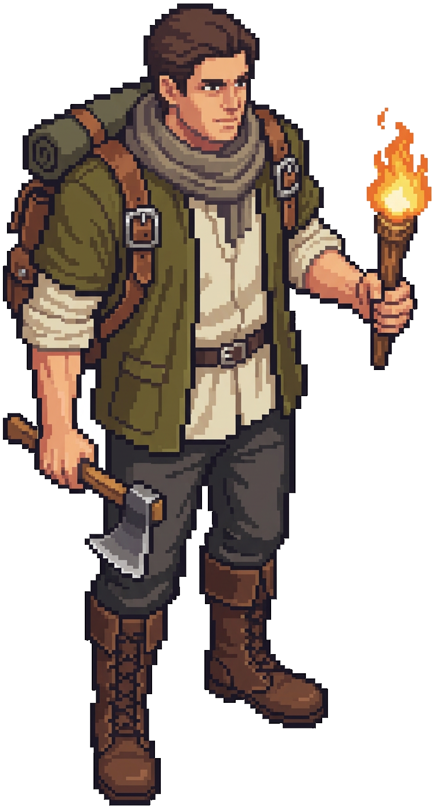

ВЫБРАННЫЙ ХУДОЖЕСТВЕННЫЙ ЭТАЛОН
Вот каким должен быть герой

СИЛУЭТ · ПАЛИТРА · СНАРЯЖЕНИЕЭто художественный эталон, не подмена рига. Силуэт, материалы, лицо и палитра заданы выбранной иллюстрацией.
ИЗОЛИРОВАННЫЙ ИНТЕРАКТИВНЫЙ СТЕНД · CANVAS 2D
Утверждённый концепт задаёт внешность: оливковая куртка, светлая рубаха, шарф и кожаное снаряжение. Справа — не картинка, а один игровой риг: повороты, движение, слои одежды и отдельный предмет в каждой руке.
ВЫБРАННЫЙ ХУДОЖЕСТВЕННЫЙ ЭТАЛОН

СИЛУЭТ · ПАЛИТРА · СНАРЯЖЕНИЕЭто художественный эталон, не подмена рига. Силуэт, материалы, лицо и палитра заданы выбранной иллюстрацией.
ПОЛНОЦЕННЫЙ ИНТЕРАКТИВНЫЙ РИГ
Управление действует на этот риг. Позы считает слоемый Canvas-риг, а переключатель «Пиксель / Гладкий» показывает его то пиксель-арт-проходом (ограниченная палитра, дизеринг, контур и тёплый свет от факела), то гладкими векторами. Проверяй силуэт в четырёх направлениях, шаге и беге; снимай одежду и независимо меняй предмет в каждой руке.
ИЗМЕНЕНИЯ СРАЗУ ВИДНЫ НА ИГРОВОМ РИГЕ
Сними верхний слой или рюкзак; оставь руки свободными либо назначь им разные предметы. Правая рука ведущая по умолчанию, леворукость переключается выше.